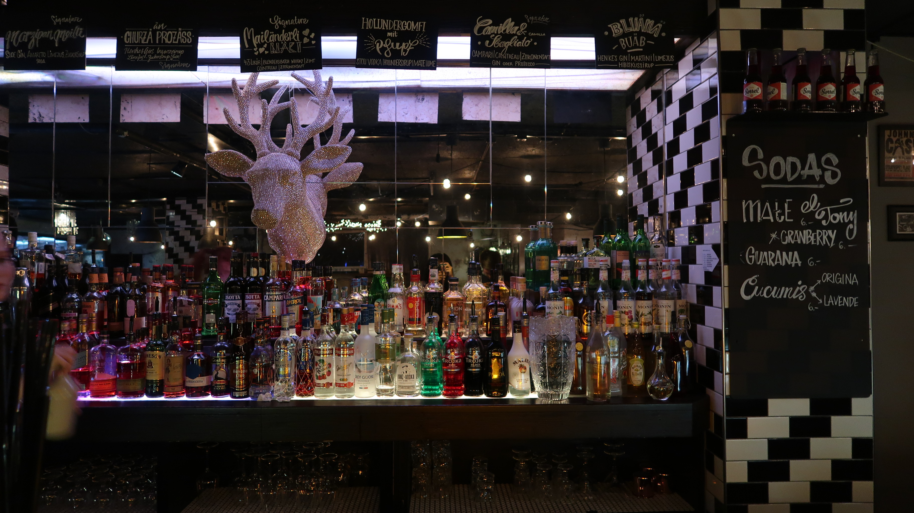
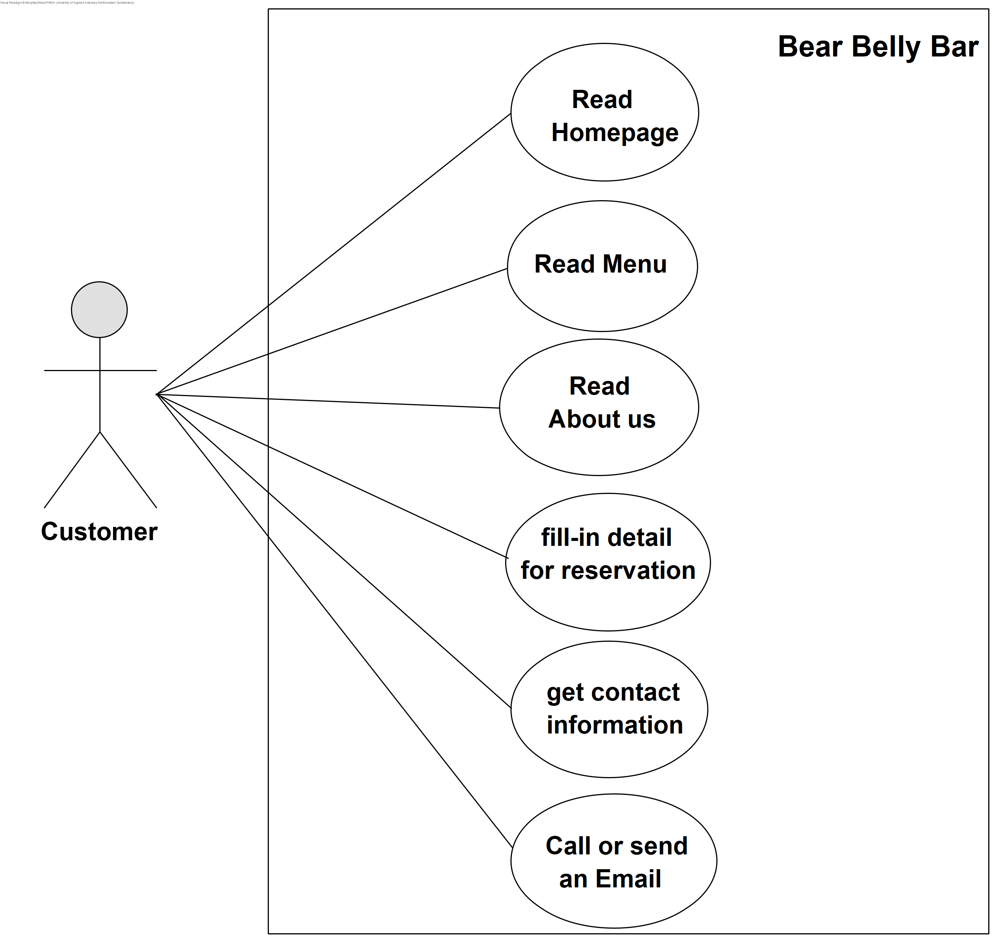

Beer Belly Bar, the brainchild of local celebrities and their financier partners, is an international beer bar and event space, centrally located in the trendy neighborhood of Gundeli in the Gundeldingen Quarter of the city of Basel.
Recognizing the need for an inviting yet sophisticated meeting spot, Beer Belly was created in the fall of 2009 by Swiss native and international sports star, Branislav Kostic, tech savvy influencer and jet-setter, Olga Osipova, renowned international fashion expert and entrepreneur, Thitari Somboon and financier, Sherdel Käppler.
Beer Belly offers a large open floor plan, with communal indoor and outdoor seating. The bar also offers game rooms, projector screens for sports fans and private rooms for smaller parties.
Featuring quality beers from over 150 different countries and varied local craft beers from microbreweries in neighboring regions, which are sure to satisfy even the most discerning of guests and the most complex of palates. For novices, one of our knowledgeable staff will assist you, in what we call a one-on-one taste profile, in experimenting with the many new and exciting flavors.
Each month a team of beer lovers are invited to sample and rate a hand selected group of the top 20 trending beers. The winner is then promoted as Beer of the month and profiled on the website.
Bear Belly Bar’s website shows products and services that are available in the bar. Our use case diagram provides a visual representation of how our website can be used.
